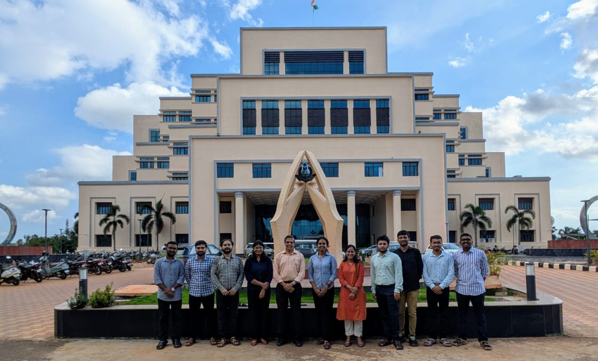
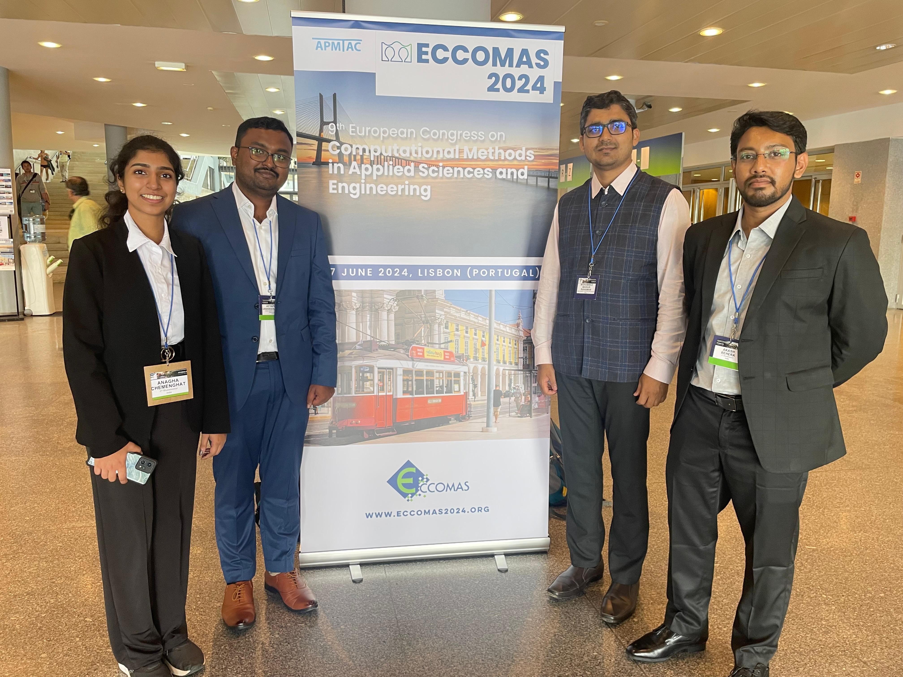
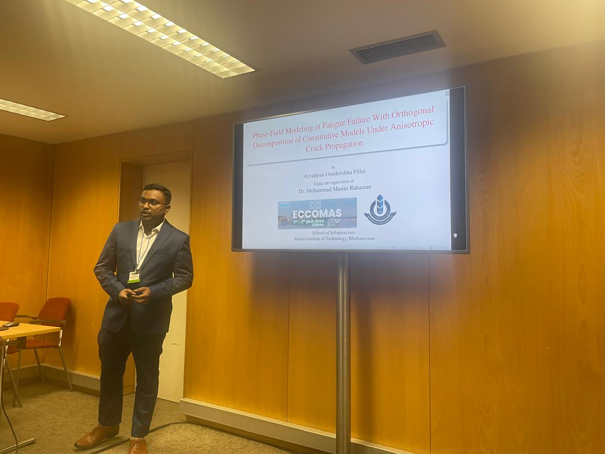
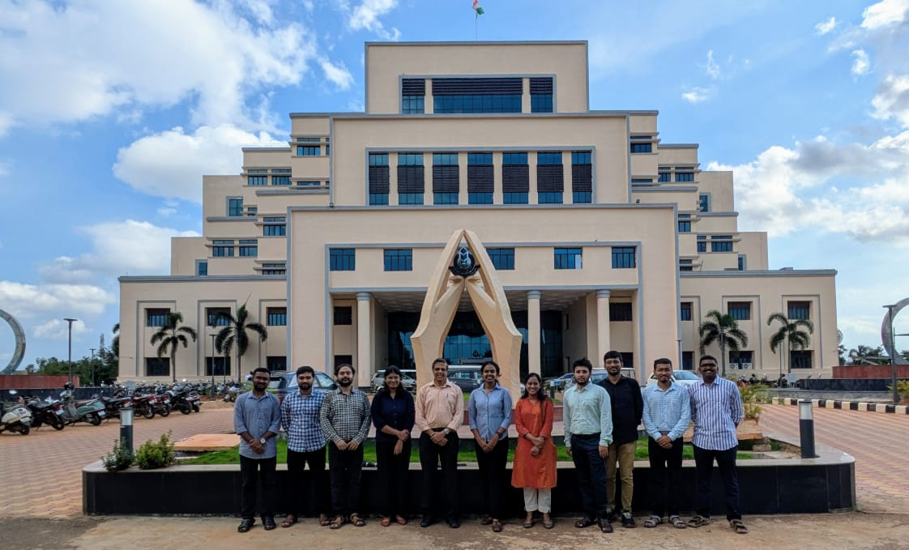
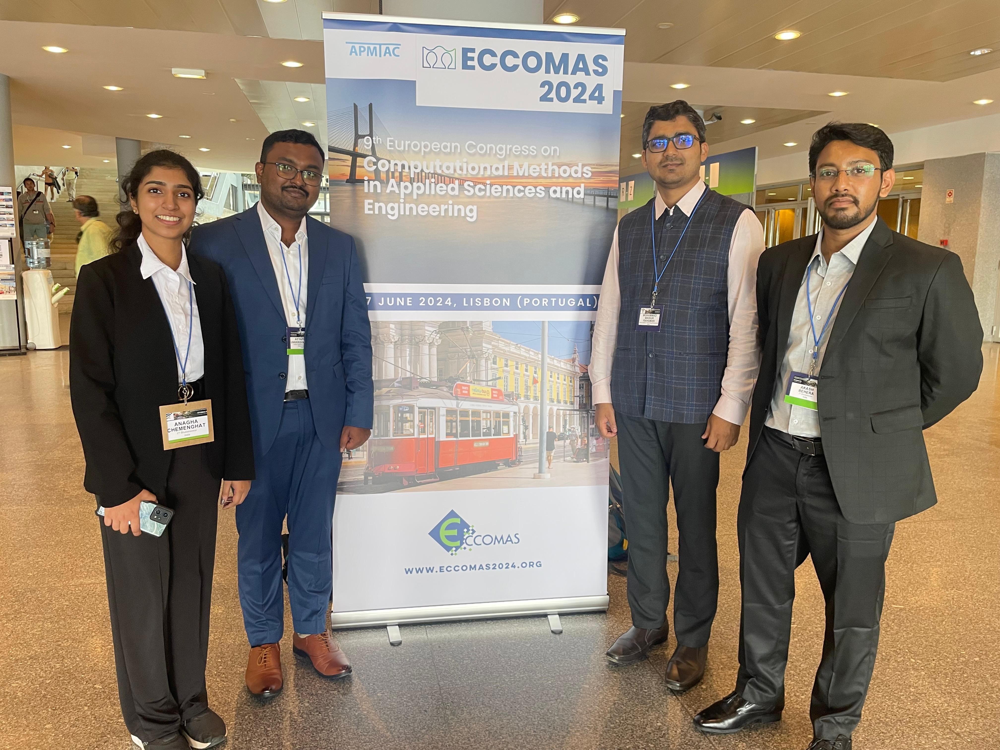
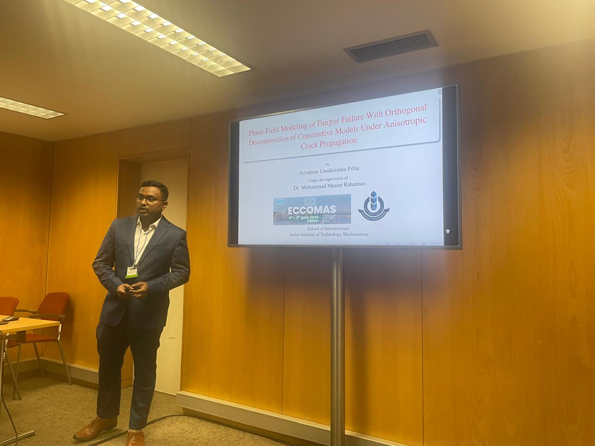
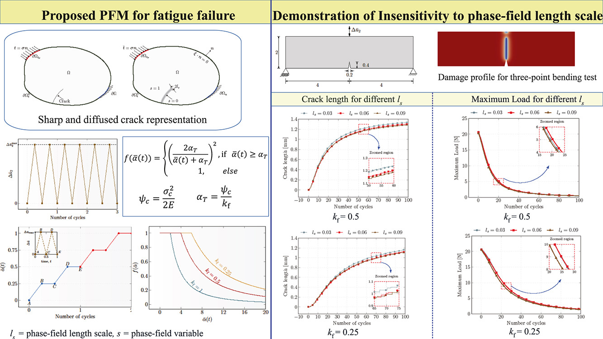
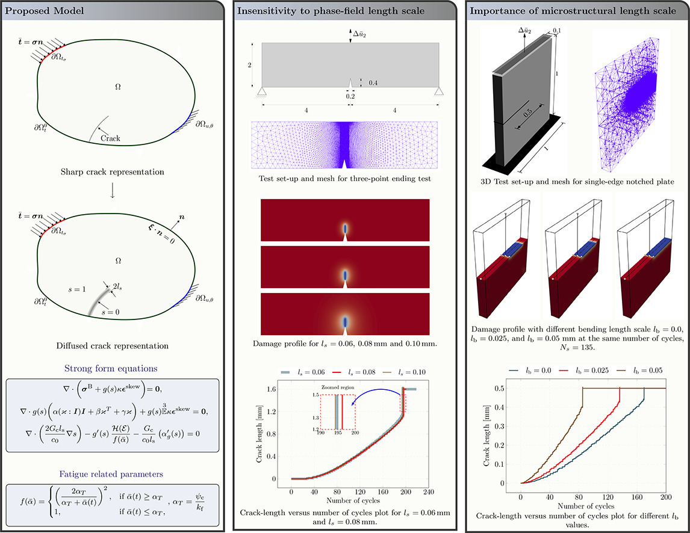
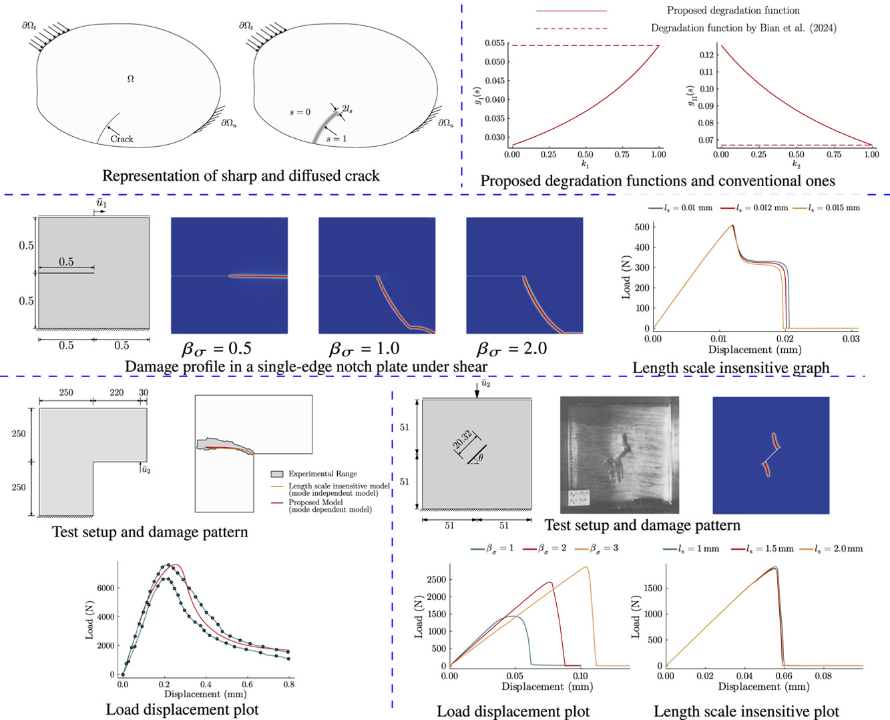
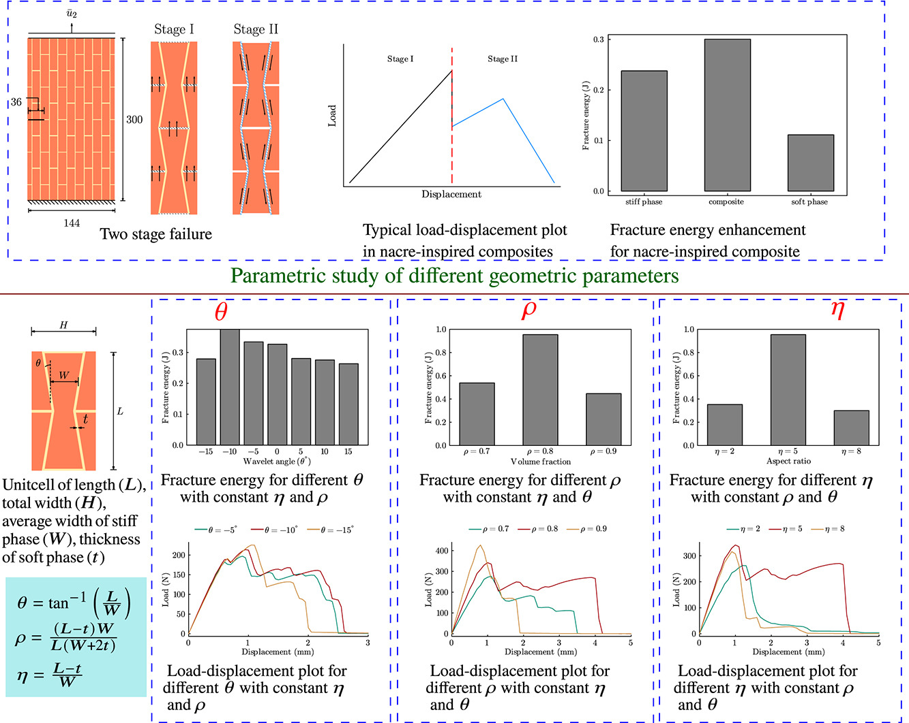

AYYAPPAN U
Welcome to my personal website! I am Ayyappan U, a passionate and dedicated PhD student pursuing my doctoral studies in the field of computational mechanics at the Indian Institute of Technology, Bhubaneswar. My journey in the world of academia has been a fascinating and enriching one. I hold a Bachelor's degree in Civil Engineering and a Master's degree in Structural Engineering, both of which have fueled my curiosity and prepared me for the challenges of advanced research. My academic journey has always been driven by a deep-seated fascination for fracture in smart materials, and I am committed to making meaningful contributions to this field. My current research focuses on fatigue failure in piezoelectric energy harvesters. In addition to my research, I have a strong passion for teaching and sharing knowledge. I had the privilege of teaching and mentoring undergraduate students in Solid mechanics, Structural analysis, and Finite element methods. I believe that effective teaching and mentorship are essential components of a successful academic journey. For model implementation, I utilize the Gridap package in Julia. I am passionate about pushing the boundaries of applied mechanics and am open to research collaborations—feel free to reach out!

My Resume
Curriculum Vitae
Ayyappan U - PMRF Research Scholar
My Gallery
General
 





Phase-Field Fracture Model

Topology Optimization
Education
Indian Institute of Technolgy, Bhubaneswar
This study introduces a consistent mode-dependent phase-field model (PFM) for brittle failure under both mechanical and electro-mechanical loading conditions. The proposed framework will facilitate the topology optimization of smart materials, aiming to minimize structural weight while enhancing fracture strength. Currently, a mode-dependent PFM for brittle fracture under mechanical loads is developed by proposing mode-factor dependent degradation functions that incorporate the effect of two additional fracture parameters, namely the mode-II critical energy release rate and mode-II fracture strength, on the overall mechanical response. Using the proposed mode-factor dependent degradation functions and employing a recently proposed modified strain decomposition scheme, analytical expressions for the mode-I and mode-II fracture strengths are provided corresponding to the mode-dependent parts of the elastic energy. Mode-dependent driving forces are proposed by adopting a modified Benzeggagh-Kenane (B-K) criteria and deriving expressions for the critical energy release rate corresponding to individual fracture modes. The proposed model provides a consistent coupling between the different fracture modes and can thus predict fracture for all possible mode-mixity ratios. A parametric study is carried out to unravel the effect of mixed-mode fracture parameters on the mechanical response of isotropic materials by considering a few representative numerical examples. The numerical results from the proposed model show an excellent agreement with experimental results reported in the literature. Moreover, results have been generated for the case of fatigue failure in materials under mechanical and electro-mechanical loading conditions, which can be extended for the development of mode-dependent fracture models. The fatigue effect has been characterized by introducing a degradation function that regulates the evolution of the phase field variable. The obtained results under both cyclically applied displacement and electric potential are demonstrated.
Indian Institute of Technolgy, Bhubaneswar
The development of high-performance bio-inspired composites is one of the contemporary topics of research interest. Experiments on composites made of constituents with contrasting material properties and thus possessing a distinct material interface have shown very promising results in terms of having high strength and high toughness. To the best of author's knowledge, although several analytical studies on the functionally graded in-homogeneous plates with material properties varying in exponential or power series manner are available in the literature, there is no analytical method to find a closed-form solution for composites with a distinct material interface. Because of the unavailability of analytical methods, finite element solutions are extensively used for the analysis of these problems. However, validation of the finite element solution for composites with material interface against benchmark problems will increase the confidence. In this work, a diffused material interface-based novel method is proposed for finding analytical solutions for the elastic deformation in composites with in-plane homogeneity that can be used as benchmark problems for the validation of the finite element solutions. In the proposed analytical method, the material interface is diffused using a Gaussian kernel function and derived expressions for the material properties that are smooth, i.e, functions and their derivatives are continuous, in the entire domain. The Galerkin method is used to solve the governing partial differential equations for the derived smooth material properties. The efficacy of the proposed analytical approach is demonstrated through illustrative examples on the composite bar, beam, and plates with in-plate inhomogeneities. Also, a combined diffused material interface and hybrid phase-field model is proposed for modeling micro-fracture evolution in heterogeneous composites. Here, analytical expressions for the regularized properties at the material interface are derived from the matrix and inclusions properties by using a recently proposed diffused material interface method. To model de-bonding at the material interface or cracks in the matrix or inclusion, the phase-field model, a continuum diffused crack approach, that provides the crack path as a solution to partial differential equations is used and thus bypasses the requirement of tracking individual cracks, enrichment of shape-functions or re-meshing during crack propagation. An open-source implementation of the proposed combined model is proposed using a recently developed finite element toolbox, Gridap in Julia. The proposed model and its implementation is validated against experimental results on complicated de-bonding and kinking micro-crack paths in quasi-brittle materials.
Grade: 9.43
Skills
- Julia
- Matlab
- Mathematica
- Abaqus
- STAAD.pro
- ETABS
- MS Office
- LaTeX


Interests
My research interests are rooted in the intricate and dynamic field of computational fracture mechanics, where I focus on developing advanced methodologies to understand and predict material failure. I am particularly fascinated by fatigue failure involving multiphysics, exploring how various physical phenomena interact to influence material degradation over time. A significant aspect of my work involves the development of in-house computer codes, enabling tailored and efficient solutions for complex engineering problems. Additionally, I delve into interface failure in composites, investigating the behavior of composite materials under stress, and frictional dissipation in fracture, examining how frictional forces contribute to the energy dissipation in fracture processes
Beyond research, I am passionate about activities that enrich both body and mind. Cycling offers me a refreshing way to stay active and connect with nature. I enjoy reading across various genres, which fuels my curiosity and broadens my perspective. Movies are another source of inspiration and entertainment, providing a glimpse into different cultures and narratives. Lastly, hearing music is a constant companion, offering both relaxation and stimulation for creativity.
Achievements & Certifications
- Awarded Prime Minister's Research Fellowship by the Ministry of Education, Govt of India, in December 2022 for a period of three and half years.
- Secured AIR 2128 in GATE (CE) conducted by IIT Delhi in the year 2020 with a GATE score of 660.
- Presented on "Phase-Field Modeling of Fatigue Failure With Orthogonal Decomposition of Constitutive Models Under Anisotropic Crack Propagation" at 9th European Congress on Computational Methods in Applied Sciences and Engineering, ECCOMAS 2024, Lisbob, Portugal.
- Presented on "A phase-field model for fatigue failure of ceramic laminates under residual stress field" at 9th International Congress on Computational Mechanics and Simulation, IIT Gandhinagar.
- Presented on "A diffused material interface based analytical method for elastic analysis of composites with in-plane inhomogeneity" 8th International Congress on Computational Mechanics and Simulation, IIT Indore.
- Got seventh rank in B.Tech Civil Engineering from APJ Abdul Kalam University, Kerala, India in 2015-2019 Batch
Research Works
Research Objective
The present study aims to develop novel phase-field modeling techniques to enhance the design of fracture- and fatigue-resistant structural components. The study focuses on materials such as ceramics and multiphysics solids. By addressing limitations inherent in conventional phase-field models, we develop novel, mode-dependent, and length-scale-insensitive models to accurately predict both fracture and fatigue behavior. The applications of this work span from enhancing the fracture resilience of solids, including micropolar solids and multiphysics energy systems, to applying phase-field models in the topology optimization of structural designs.
A Novel Phase-Field Model for Fatigue Failure in Functionally Graded Materials Under Thermo-Mechanical Loading (Under review)

This article presents a novel phase-field model (PFM) for predicting fatigue failure in functionally graded materials (FGMs) under non-isothermal conditions. The proposed model is the first PFM for analysing fatigue in FGMs under coupled thermo-mechanical loading, and it establishes a phase-field length scale-insensitive formulation for thermo-mechanical fatigue in brittle materials. The governing equations and constitutive relations are derived within a thermodynamically consistent framework, allowing for the incorporation of dissipative effects such as viscous damping when necessary. To validate the proposed model, we considered homogeneous specimens as a special case of functionally graded ones and reproduced the results for a few representative benchmark problems. To investigate the effect of temperature boundary conditions and material gradation on the fatigue response, we conducted comprehensive parametric studies. Through representative numerical examples, we demonstrated that both the gradation parameter and the spatial arrangement of constituent materials significantly affect the fatigue life of FGMs. Through numerical examples, we demonstrated the predictive capability of the proposed model in accurately capturing the complex interplay between thermal and mechanical effects in fatigue processes. The numerical results show the effectiveness and versatility of the proposed model, which consistently yields predictions that are insensitive to the phase-field length scale. The numerical implementation of the proposed model is accomplished using an open-source finite element package called Gridap, available in Julia to promote reproducibility and further research in this area.
Read MoreA phase-field length scale insensitive micropolar fatigue model
This article proposes a novel phase-field length scale insensitive model for fatigue failure in brittle materials. In the proposed model, we incorporate a necessary fatigue-related parameter to define the fatigue threshold energy as a function of the fracture strength and make the mechanical response of a material insensitive to the phase-field length scale. In the proposed model, we derive the governing partial differential equations by invoking the virtual power principle and assume constitutive relations for the thermodynamic fluxes on satisfying the thermodynamic laws. We provide a consistent derivation for determining the parameters that appear in the degradation function. We demonstrate the efficacy of the proposed model by generating phase-field length scale insensitive response in terms of crack length and maximum amplitude of load versus number of cycles for a few representative numerical examples, viz. a three-point bending test, a single-edge and a double-edge notched plate under low cycle fatigue. The numerical results highlight excellent insensitivity of the global mechanical response to the phase-field length scale parameter, validating the robustness of the proposed model. For numerical implementation, we have utilized an open-source finite element toolbox called Gridap, available in a high-performance programming language Julia, that facilitates third-party verification, promotes transparency and reproducibility, and sets a benchmark for efficient open-source code development in the scientific community.
Read MoreA phase-field length scale insensitive model for fatigue failure in brittle materials
This article proposes a novel micropolar phase-field model for size-dependent fatigue failure in solids under mechanical loading. To develop the proposed model that can capture experimentally observed size effects in brittle materials, we employ micropolar theory in a phase-field length scale-insensitive framework and address the limitations of classical phase-field fatigue models. A key advantage of the proposed model is its ability to eliminate artificial nonlocal effects introduced by the phase field length scale while preserving the physical size effects dictated by the material microstructure. In the proposed model, we introduce micro-rotation as an additional kinematic variable and derive the governing partial differential equations by invoking the principle of virtual power. The constitutive relations are established in accordance with thermodynamic laws, enabling the incorporation of dissipative effects whenever required. To make the proposed model insensitive to the phase-field length scale and thus eliminate artificial nonlocal effects, we incorporate a fatigue-related parameter that defines the fatigue threshold energy as a function of the material fracture strength. We demonstrate the efficacy of the proposed model through numerical simulations on a set of benchmark two- and three-dimensional problems that include three-point bending tests, single-edge notched plates, etc., and provide a qualitative experimental validation against the results available in the literature. The numerical results show a significant influence of the micropolar parameters on fatigue behavior, emphasizing the necessity of the proposed formulation for materials that exhibit pronounced nonlocal effects. We demonstrate the insensitivity of the proposed model to the phase-field length scale using plots of consistent crack growth versus the number of cycles for different values of the phase-field length scale. For the numerical implementation of the proposed model, we use an open-source finite element library called Gridap, available in Julia, a recently developed high-performance programming language. The availability of open-source codes ensures transparency, reproducibility, and ease of verification, setting a high standard for open-source computational tools in scientific research. The numerical findings validate the robustness of the proposed model, establishing its suitability for accurately simulating size-dependent fatigue behavior in materials.
Read MoreA phase-field length scale insensitive mode-dependent fracture model for brittle failure
This article presents a consistent phase-field length scale insensitive mode-dependent fracture model for brittle failure by proposing mode-factor dependent degradation functions that incorporate the effect of two additional fracture parameters, namely the mode-II critical energy release rate and mode-II fracture strength, on the overall mechanical response. Using the proposed mode-factor dependent degradation functions and employing a recently proposed modified strain decomposition scheme, we provide analytical expressions for the mode-I and mode-II fracture strengths corresponding to the mode-dependent parts of the elastic energy. Adopting a modified Benzeggagh–Kenane (B–K) criteria, we propose mode-dependent driving forces by deriving expressions for the critical energy release rate corresponding to individual fracture modes. The proposed model provides a consistent coupling between the different fracture modes and can thus predict fracture for all possible mode-mixity ratios. A parametric study is carried out to unravel the effect of mixed-mode fracture parameters on the mechanical response of isotropic materials by considering a few representative numerical examples. The numerical results from the proposed model show an excellent agreement with experimental results reported in the literature.
Read MoreA micropolar phase-field model for size-dependent electro-mechanical fracture

This article proposes a micropolar phase-field model for size-dependent brittle fracture in solids under electro-mechanical loading conditions. Considering displacement, micro-rotation, electric potential, and phase-field variable as the kinematic descriptors and employing the virtual power principle, we derive a set of coupled governing partial differential equations (PDEs) for size-dependent solids. Invoking the first and second laws of thermodynamics, we determine the constitutive relations for the thermodynamic fluxes. Carrying out the finite element implementation of the derived governing PDEs using the open-source Gridap package in Julia, we demonstrate the efficacy of the proposed phase-field model through a few representative numerical examples. Especially the importance of the proposed model in incorporating the effect of relative rotation, i.e., the difference between macro- and micro-rotation, on the response of solids under electro-mechanical loading is shown that may not be possible with the existing non-local models such as strain-gradient or couple-stress approaches. To capture the experimentally observed size effects in solids under electro-mechanical loading, the proposed model does not demand higher-order continuity of the field variables, unlike a typically used strain gradient model. To demonstrate the efficacy of the proposed model, we have compared our results against demanding experimental and numerical benchmark results available in the literature. We provide a parametric study to unravel the effect of different micropolar material parameters on the electro-mechanical response of a brittle solid. Interestingly, the proposed micropolar model is less sensitive to the phase-field length scale than the conventional non-polar phase-field models.
Read MoreDetermining the role of microstructural topology on the mechanical performance of nacre-inspired composites using a phase-field model
Bio-inspired composites are celebrated for their remarkable strength and fracture toughness, often surpassing the properties of their constituent materials. A prime example of this inspiration is the nacre which is approximately three thousand times tougher than its components and showcases not only high toughness but also high strength. This extraordinary performance is largely attributed to its intricate microstructure. However, engineered composites have faced challenges in achieving similar levels of toughness. Attempts to replicate the "brick–mortar" microstructure of nacre revealed that mere imitation falls short. Recent studies emphasize the critical influence of specific parameters, such as volume fraction, aspect ratio, and tablet waviness angle, on the microstructure effectiveness. Prior investigations, whether experimental, numerical, or analytical, underlined the importance of these parameters in shaping composite mechanical properties. However, many of these studies relied on commercial software with some inbuilt fracture criteria, often overlooking the potential benefits of incorporating a phase-field model for a more comprehensive parametric analysis. Our research delves into the impact of these parameters on the mechanical performance of nacre-inspired composites, utilizing a phase-field model based on Griffith's fracture criteria for complex crack propagation modeling. We notably reveal the superior performance of geometrically interlocking architecture compared to non-interlocking and rectangular architecture, marking a pioneering parametric exploration of this microstructure using a phase-field model. We validate our findings through experimental and numerical data. In summary, our work demonstrates that by strategically adjusting microstructural parameters, one can achieve optimal performance enhancements in nacre-inspired engineered composites. For instance, even a slight alteration of the waviness angle while maintaining constant volume fraction and aspect ratio can yield a remarkable 16.23% increase in fracture energy. Our open-source finite element codes, implemented using the Julia-based Gridap package, offer a "virtual" experimental tool for designing bio-inspired composites with high toughness and reasonable strength. This approach also provides valuable insights into creating exceptionally tough multilayered composites with diverse constituent combinations, holding significant promise for applications in automotive, aerospace, armor, and beyond.
Read More
A phase-field model for electro-mechanical fracture with an open-source implementation of it using Gridap in Julia
In this paper, we propose a phase-field model for electro-mechanical fracture in brittle materials and provide an open-source implementation of the proposed model using a newly developed finite element (FE) toolbox, Gridap in Julia. Here, we have considered electric potential as an additional kinematic descriptor along with the displacement and phase-field variable. Using the virtual power principle, we have derived force balances for the electro-mechanical forces and a force balance associated with the damage. To incorporate the strong electro-mechanical coupling effect into the model, we have considered the Helmholtz free energy as a function of the electric field vector, strain tensor, phase-field variable, and the gradient of the phase-field variable. The proposed model ensures that the constitutive relations of the thermodynamic fluxes are on the satisfaction of the thermodynamic laws and can readily accommodate dissipative energy effects whenever needed. The proposed model provides complex crack paths as a solution to the governing partial differential equations (PDEs), and thus bypasses the need for re-meshing, enrichment of FE shape functions, and an explicit tracking of the crack surfaces. The use of Gridap makes the FE implementation of the proposed model exceedingly compact and user-friendly requiring very low memory usage and providing a high degree of flexibility to the users in defining weak forms of the governing PDEs. We have validated the proposed model and its implementation against a compact tension test on a single edge notched plate and a set of three-point bending tests on a notched beam made of lead zirconium titanate (PZT)-4 piezoelectric ceramics.
Read More
Combined diffused material interface and hybrid phase-field model for brittle fracture in heterogeneous composites
In this article, we propose a novel approach for modeling brittle fracture in heterogeneous composites using a combined diffused material interface method and a hybrid phase-field model (PFM). We have used the diffused material interface method to derive analytical expressions for the regularized material properties across the material interfaces that are treated as an input to the PFM for the simulation of brittle fractures in composites. The use of diffused material interface method regularizes the material properties in such a way that one can avoid the discontinuity in stress across the material interface and thus bypass the requirement of explicit tracking of material interfaces for finite element implementation of the hybrid PFM. We have implemented the proposed combined model using a recently developed open-source finite element toolbox, Gridap in Julia. We have considered tests on a single circular fiber inclusion under tension, a bi-material rectangular plate under tension, single square inclusion under tensile loading, a notched composite beam with a central notch under symmetric three-point bending, and a rectangular plate with multiple fibers under tensile loading to show how the proposed combined model can be used to simulate brittle fracture in composites.
Read MoreA novel homogenization method for periodic piezoelectric composites via diffused material interface
In this article, we propose a novel homogenization method for piezoelectric composites with periodic microstructures. In the proposed homogenization method, one can find the analytical expressions for the material properties of the composites in the representative volume element (RVE) via diffused material interface method. The availability of analytical expressions for the material properties in the entire domain of the RVE enables one to determine the effective homogenized material properties with the standard finite element method. As the proposed homogenization method regularizes the discontinuity in material properties across the interfaces, there is no need to explicitly track the material interfaces while implementing the finite element method for determining the effective material properties. Hence, one can implement the proposed homogenized method for any piezoelectric composites with complicated material interfaces and determine the effective material properties. In this study, we have considered the piezoelectric composites to be comprised of periodic microstructures where the RVE constitutes a matrix with an inclusion of a specific shape. We have carried out a study on the effect of the shape of inclusion viz. square-shaped, I-shaped, T-shaped, and plus-shaped, and the size of inclusion on the effective piezoelectric material properties. We have also studied the influence of shape and size of inclusion on the electro-mechanical response of a homogenized piezoelectric continuum. To implement the proposed homogenization method, we have used Gridap, an open-source finite element toolbox in Julia that provides very compact codes freely available to all the researchers and makes a third-party verification of the proposed method straightforward.
Read MoreTeaching Assistantship
TA in Solid Mechanics
I conducted tutorial classes for B.Tech students, covering a range of topics in solid mechanics, including tensor algebra, kinematics, and more. These sessions were designed to deepen students' understanding of complex concepts and enhance their problem-solving skills in the field of solid mechanics.
TA in CAD lab
I conducted tutorial classes for B.Tech students on various software tools used in civil engineering, including MATLAB, Abaqus, and others. These sessions focused on equipping students with practical skills and knowledge to effectively utilize these tools in their engineering projects.
TA in Design of Concrete Structures (PMRF TA)
I taught a comprehensive course on the design of concrete structures for B.Tech fourth-year students, covering essential principles and practical applications to prepare them for advanced challenges in civil engineering.
TA in Advanced Solid Mechanics
I conducted tutorial classes for M.Tech students on various topics in solid mechanics, including tensor algebra, kinematics, and more. These sessions were designed to provide in-depth knowledge and enhance the analytical skills required for advanced studies in solid mechanics.
Class on Matlab (PMRF TA)
I conducted a tutorial and workshop for B.Tech students titled 'Exploring Scientific Programming: An Introduction to MATLAB,' providing foundational skills in MATLAB for scientific and engineering applications.